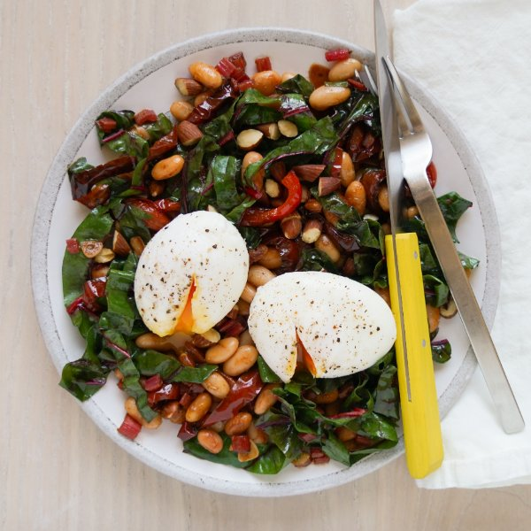

Garlicky Bean, Swiss Chard, Bell Pepper & Almond Sauté with Eggs

Prep Time
35 min
Nutrition (per serving)
550.1 kcalCalories
29.7 gProtein
45.9 gCarbs
29.2 gFat
Full nutrition table
| Calories | 550.1 kcal |
| Total fat | 29.2 g |
| Saturated fat | 4.9 g |
| Trans fat | 0.1 g |
| Cholesterol | 327.4 mg |
| Sodium | 590.4 mg |
| Carbohydrates | 45.9 g |
| Fiber | 14.6 g |
| Sugars | 12.5 g |
| Protein | 29.7 g |
| Potassium | 1238.8 mg |
| Calcium | 247.7 mg |
| Iron | 6.8 mg |
| Vitamin A | 6244.6 IU |
| Vitamin C | 178.3 mg |
| Vitamin D | 72.2 IU |
Cookware
Ingredients
- ⅔ cupalmonds
- 2 (15 oz) canscannellini (white kidney) beans
- 8eggs
- 2 clovesgarlic
- 4red bell peppers
- 1 bunchSwiss chard
- black pepper
- extra virgin olive oil
- red wine vinegar
- salt
- smoked paprika
Steps
- Wash, dry, trim, and seed bell peppers; slice lengthwise into thin strips.4 red bell peppers
- Preheat a large skillet over medium heat.
- Once the skillet is hot, add oil and swirl to coat the bottom. Add peppers and salt. Cook, stirring occasionally, until tender and starting to brown, about 10 minutes.2 tbsp extra virgin olive oil
½ tsp salt - While the peppers are cooking, fill a large pot about halfway with hot water (from the tap); add vinegar, cover with a lid, and bring to a boil over medium-high heat. Once the water in the pot is boiling, reduce heat to medium-low.2 tbsp red wine vinegar
- Meanwhile, wash and dry chard; fold leaves in half lengthwise and slice off the stems. Cut leaves crosswise into thin (shred-like) strips and thinly slice the stems, keeping them separate. Place leaves in a medium bowl and stems in a small bowl.1 bunch Swiss chard
- Peel and thinly slice garlic. Add to the bowl with the stems and set aside.2 cloves garlic
- Drain and rinse beans; set aside to drain further.2 (15 oz) cans cannellini (white kidney) beans
- When the peppers are tender, add chard stems, garlic, smoked paprika, and salt to the skillet. Cook, stirring occasionally, until garlic is fragrant, about 30 seconds.2 tsp smoked paprika
½ tsp salt - Add beans to the skillet and continue to cook, stirring occasionally, until warmed through, about 30 seconds.
- Add chard leaves to the skillet in handfuls, waiting for the leaves to wilt slightly before adding the next handful. Add vinegar and stir to combine. Remove from heat and set aside.1 tbsp red wine vinegar
- Gently crack eggs into additional small bowls (two eggs per bowl).8 eggs
- Adjust the heat of the pot as necessary so that the water is simmering. Working in batches if necessary, gently tip bowls into the pot, sliding the eggs carefully into the water. Cook until whites are set but yolks are still soft, 2½-3 minutes. Using the slotted spoon, transfer eggs to a plate, then season with salt and pepper.⅛ tsp salt
⅛ tsp black pepper - Meanwhile, roughly chop almonds.⅔ cup almonds
- To serve, divide veggies between plates or bowls; top with almonds and poached eggs. Enjoy!